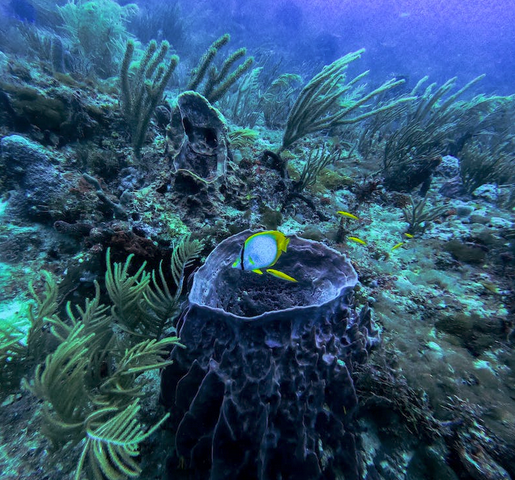
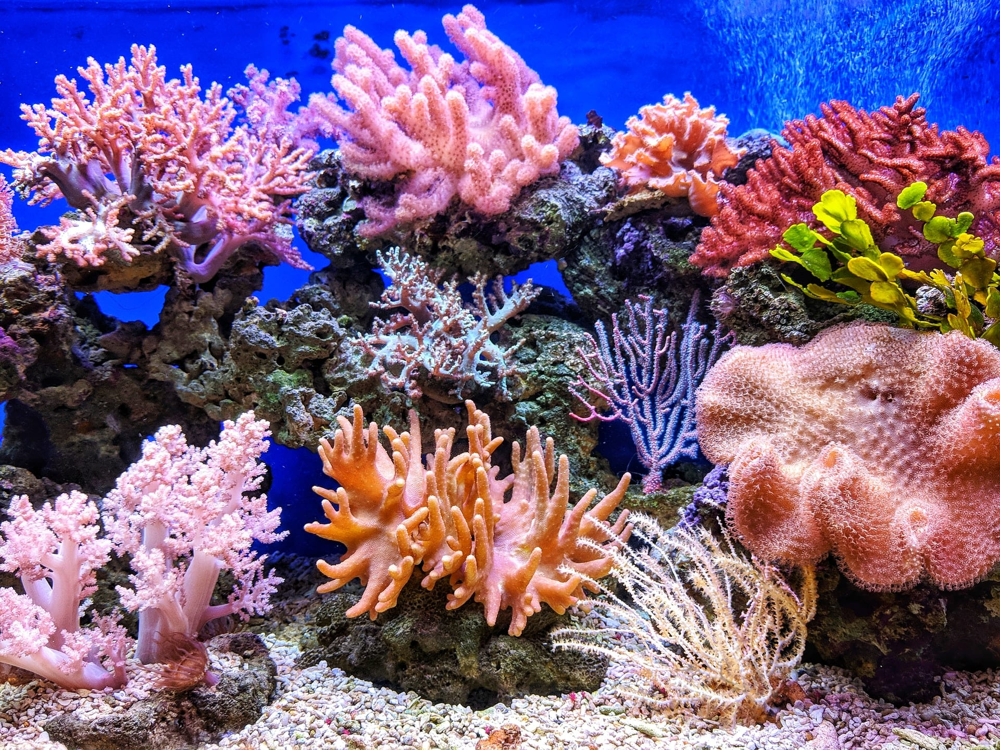

Deep-Sea Coral Ecosystems ! | |||
|
Many people think of coral as hard, rock-like formations that attract abundant, diverse marine life. In fact, corals are themselves tiny marine animals called polyps that live together in large colonies. Coral polyps are relatives of jellyfish and anemones. Some live in shallow water, some in deep; some form hard outer skeletons made of calcium carbonate, others have a soft body encasing hard internal structures known as sclerites. Hundreds of thousands of hard corals with their skeletons glued together form the iconic reef structures that do, indeed, serve as the foundation for important marine ecosystems around the world. |
|||
|
 Types of Corals: Deep-sea corals are diverse and include various species that are distinct from their shallow-water counterparts. They can be divided into two main groups: stony corals (Scleractinia) and soft corals (Octocorallia). Stony corals build calcium carbonate skeletons, much like their shallow-water relatives, and contribute to the formation of coral reefs in the deep sea. Soft corals lack the hard skeleton and are often found in areas with strong currents. Importance of Deep-Sea Corals: Deep-sea corals play a crucial role in the deep-sea ecosystem. They provide habitat and shelter for a variety of marine species, including fish, crustaceans, and other invertebrates. Some species are also filter feeders, using their tentacles to capture tiny particles from the water, contributing to nutrient cycling in the deep sea.  Threats and Conservation:Despite their remote location, deep-sea corals are facing threats from human activities. Bottom trawling, a fishing method that involves dragging heavy nets along the seafloor, can cause significant damage to deep-sea coral communities. Oil and gas exploration, deep-sea mining, and climate change also pose threats to these ecosystems. As a result, there's a growing interest in studying and protecting deep-sea corals through marine protected areas and sustainable fishing practices. In summary, deep-sea corals are remarkable organisms that have adapted to survive in extreme conditions deep within the oceans. They play a crucial role in maintaining the biodiversity and ecological balance of the deep-sea ecosystem. However, they also face various threats from human activities, highlighting the need for responsible management and conservation efforts to preserve these unique and delicate habitats. |
|||